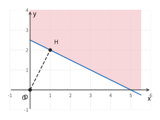

ホーム ＞ 数学II ＞ 軌跡と領域
\(x\geqq0,\ y\geqq0,\ x+2y\geqq5\) のとき、\(x^2+y^2\) の最小値を求めよ。
\(x^2+y^2=r^2\) は原点中心の円。領域に接する（触れる）最小の円を考える。垂線の足が領域内ならそこが最小。
\(x+2y\geqq5\)（右上側）、\(x\geqq0,\ y\geqq0\)。\(x^2+y^2\) は原点との距離の2乗。

原点から直線への垂線の足 \(H\) が領域内にあるので、最小値は距離の2乗。
\((x,y)=\left(1,\ 2\right)\) のとき。
【答案（テストに書く形）】
答